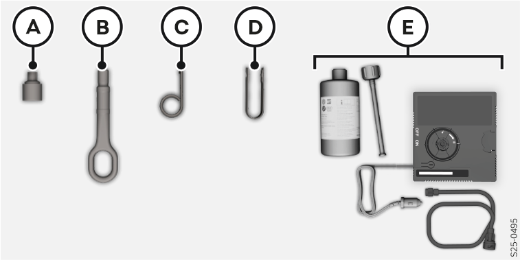
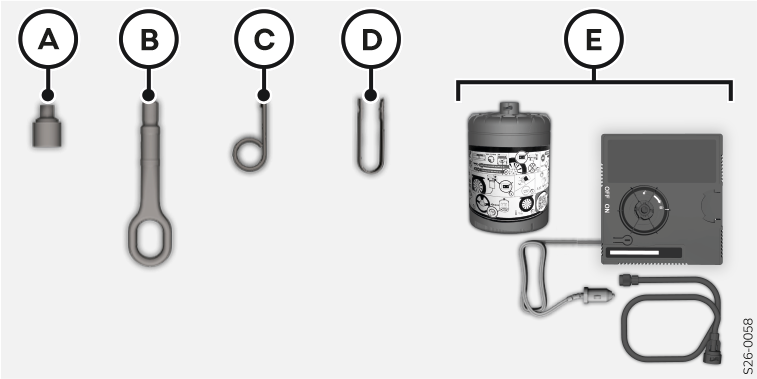

Le contenu de l’outillage de bord varie d’un équipement à un autre.


- A
Adaptateurs pour boulons antivol
- B
Œillet de remorquage
- C
Étrier d’extraction des enjoliveurs pleins
- D
Pince d’extraction pour les capuchons des boulons de roues
- E
Kit de dépannage
Un manomètre pour pneus peut également faire partie de l'équipement du véhicule pour certains pays.

AVERTISSEMENT
Lors de l'utilisation du manomètre, veiller à ne pas endommager la valve.